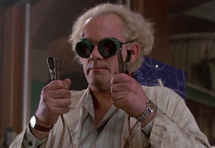

Raise your hand if you remember the Ear Mouse.
An early Internet meme, this humble rodent sparked a wave of protests and fears of genetic engineering gone wild. Long before Pizza Rat swept the planet, the science experiment known officially as the Vacanti mouse was hailed as the first sign of a terrifying future.
One activist group ran a full page ad in The New York Times under the banner “Who plays God in the 21st century?” The caption read “This is an actual photo of a genetically engineered mouse with a human ear on its back.”.
In reality, the Vacanti mouse contained no human genes nor had its DNA been altered by the scientists. The Ear Mouse was in fact a humble "nude mouse", a naturally occurring strain favored by laboratories for their lack of hair and, more importantly, an extremely weak immune system. As a result, nude mice contain no rejection response and are perfect for experiments involving tumor grafts or insertion of foreign tissue. Such as an ear.*
*Actually it was an ear-shaped mold seeded with cow cartilage, but that’s not important right now.
Okay fine (you say), this isn’t the first step toward a world of glow-in-the-dark llamas and human-bat hybrids - but what possible use could the Ear Mouse have for bettering mankind? That’s a fantastic question, and there are some pretty good answers. But an even better question is “What can the Ear Mouse teach me about building a better company?”
Remember, what made this mouse so irresistible to scientists who somehow obtained a grant to “grow an ear on the back of something” was its weak immune system. They knew whatever they inserted under its skin would take root and grow regardless of impact to that rodent’s life goals. At their deepest levels these mice lack the ability to evaluate the compatibility of outside influences. Boon or bane, all inputs are accepted without question.
Like the mice, growing businesses are bombarded by outside influences and individuals. Advice from investors and analysts, feature requests from paying (and non-paying) customers, deals and proposals from others in the market: These and other elements surround and attempt to infect the organization (for good or ill) 24/7. Those that do not align with your corporate DNA are invaders seeking to redirect resources away from the best interests of the host (you). To succeed you must build an organizational immune system to identify and reject anything incompatible with your core.
Producing a "Minimal Viable Product", or as Cognitect CEO Justin Gehtland likes to say, an “Optimal First Release”, requires intense focus on ‘minimum’ and ‘optimal’ while friends, investors, and customers all try to insert their ideas under your skin. A strong organizational immune system accepts only that which contributes to your mission. It rejects distractions that will absorb your time and money.
To evaluate a feature request, technologist Scott Barstow recommends the following template as a test:
We are building
If the completed sentence does not clearly align with your mission (or cannot be completed at all), this should trigger an immediate response to isolate and destroy the invader. Such organizational templates are like T Cells in our blood. They serve to scan interlopers for patterns that are compatible with the goals of the organization, then either accept them into the body or mount a defense against the danger.
The same goes for hiring. The “10X” programmer, the “cowboy” sales rep—if your company values teamwork and collaboration, your immune system should detect and reject these intruders as toxic to the overall well-being of the organism. Healthy hosts are also diverse hosts. Compatible does not mean ‘identical’. When one cell in the body churns out clones, this is called cancer and will kill you just as quickly as a hostile invader.
So let’s give it up for the Ear Mouse. Early internet pioneer. Marvel of science. Social catalyst.
The Ear Mouse reminds us that business grows in a petri dish of nutrient-rich opportunities, as well as infectious distractions. These invaders seek to divert your resources to feed their own desires, sapping the lifeblood of your organization. They push you to serve their needs at the expense of your dreams. To grow an ear on your back.
Strong companies build strong immune systems to accept mission-compatible people, ideas, and methods. They filter out everything else. Organizations lacking this ability, like nude mice, will see even their best-laid plans will go awry.
Originally posted at ExitEvent